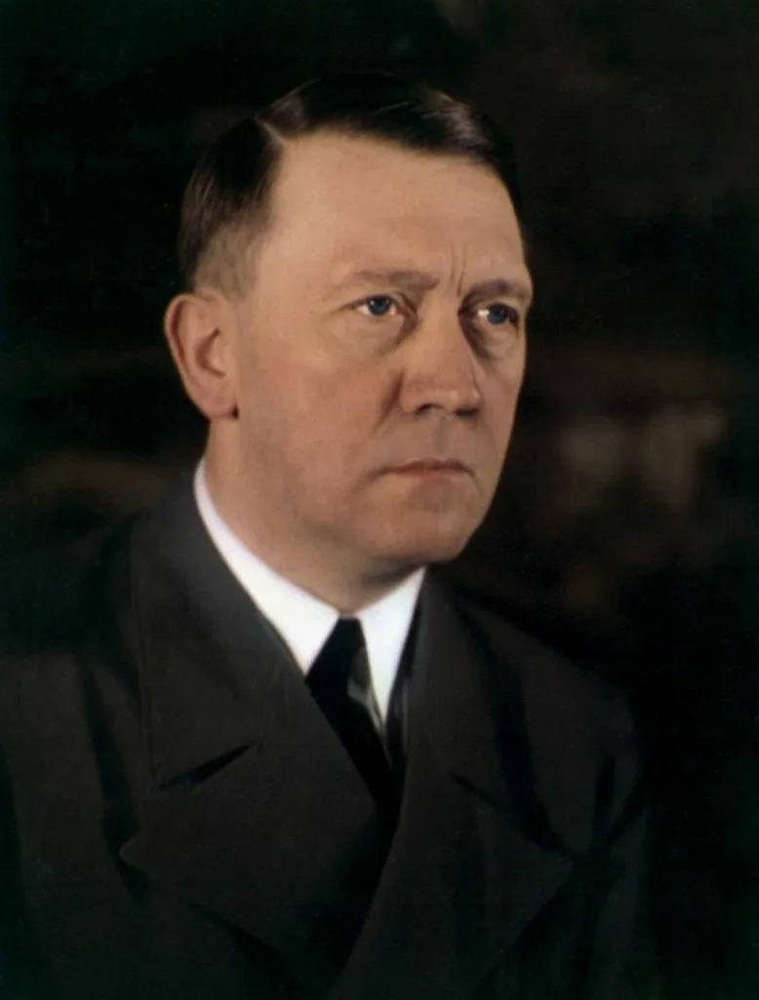

1. Раненые и больные
Защита военнослужащих, которые покинули строй из-за ранений или болезни. Обязывает оказывать им помощь вне зависимости от того, на чьей стороне они сражались.
Как события 1939–1945 годов навсегда изменили правила ведения войн
Опыт Второй мировой войны показал, что существовавшие на тот момент международные соглашения не могли защитить миллионы людей. В 1949 году международное сообщество приняло четыре Женевские конвенции, чтобы гарантировать защиту тем, кто не участвует в боевых действиях.
Защита военнослужащих, которые покинули строй из-за ранений или болезни. Обязывает оказывать им помощь вне зависимости от того, на чьей стороне они сражались.
Защита моряков и летчиков, покинувших свои корабли или сбитые самолеты. Спасение на воде должно быть беспристрастным.
Защита комбатантов, попавших в плен. Конвенция строго регламентирует их содержание, запрещает принудительный труд на военных объектах и гарантирует право на переписку с родными.
Самая важная конвенция, рожденная из опыта мировой войны. Полная защита мирного населения на оккупированных и нейтральных территориях от репрессий и угона на принудительные работы.
Дипломатическая конференция в Женеве единогласно принимает тексты четырех конвенций.
СССР ратифицирует все четыре Женевские конвенции, признавая их обязательными для исполнения.
К конвенциям добавляются Дополнительные протоколы, уточняющие правила ведения современных конфликтов.
